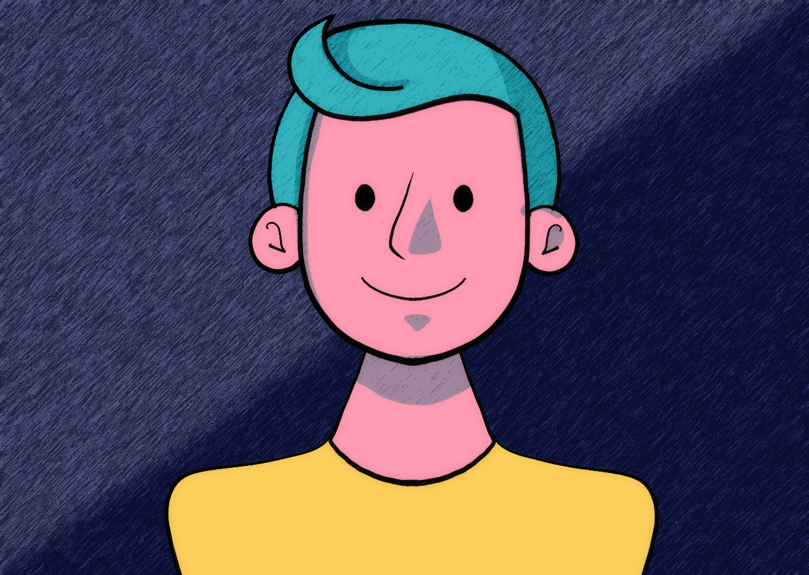
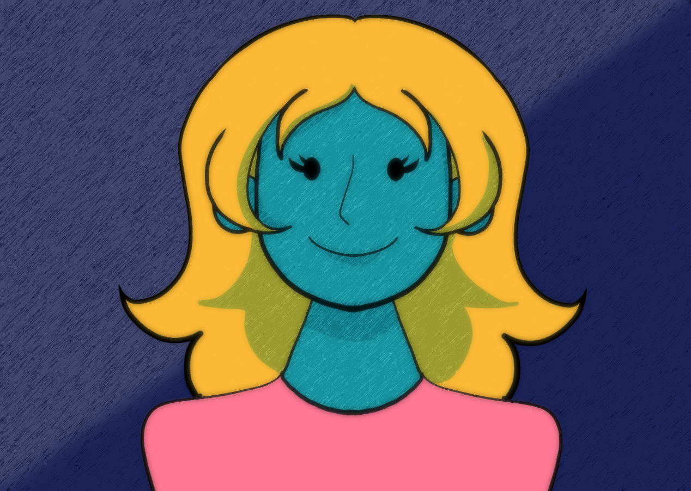
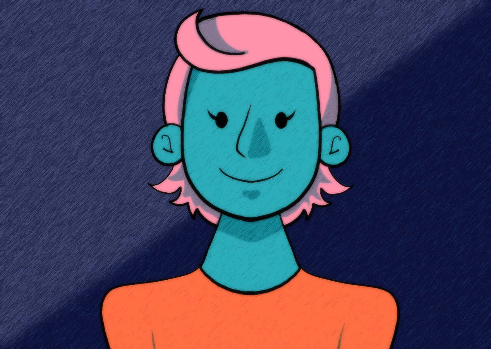

<ion-grid>
  <ion-row class="bg-aquamarine-transp mg-025rem" *ngFor="let user of userConversationList" (click)="goTochat(user.uuid)">
    <ion-col size="4">
      <ion-avatar>
        <container-element [ngSwitch]="user.sex">
          <ion-avatar>
            
            
            
          </ion-avatar>
        </container-element>
      </ion-avatar>
    </ion-col>
    <ion-col size="8">
      <ion-row class="fw-500 fs-125rem">{{user?.name}} {{user?.surname}}</ion-row>
      <ion-row class="mg-top-025rem">{{user?.lastMessage}}</ion-row>
      <ion-row class="justify-content-right mg-top-1rem fs-075rem">{{user?.lastDateMsg | date:'short' }}</ion-row>
    </ion-col>
  </ion-row>
</ion-grid>
